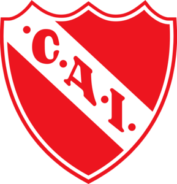

Nacionalidad: Argentina
Fecha de Nacimiento: 25/01/1954
Poscicion: Enganche
Dorsal: N°10
Altura: 1,68 m
Distinciones individuales: Futbolista Argentino del año 1983, Integrante del equipo ideal de America 1989, Diploma al Mérito de los Premios Konex de Deportes 1990, Miembro del Salón de la Fama de la AFA, One Club Man Award.
Partidos Jugados: 714
Goles: 106
Jugó entre 1972 y 1991
Titulos Nacionales: Campeonato Nacional 1977 / 1978, Campeonato de Primera Division 1983 / 1988/89
Titulos internacionales: Copa Libertadores de America 1973 / 1974 / 1975 / 1984, Copa Interamericana 1973 / 1974 / 1976, Copa Intercontinental 1973 / 1984
CONTACTO
